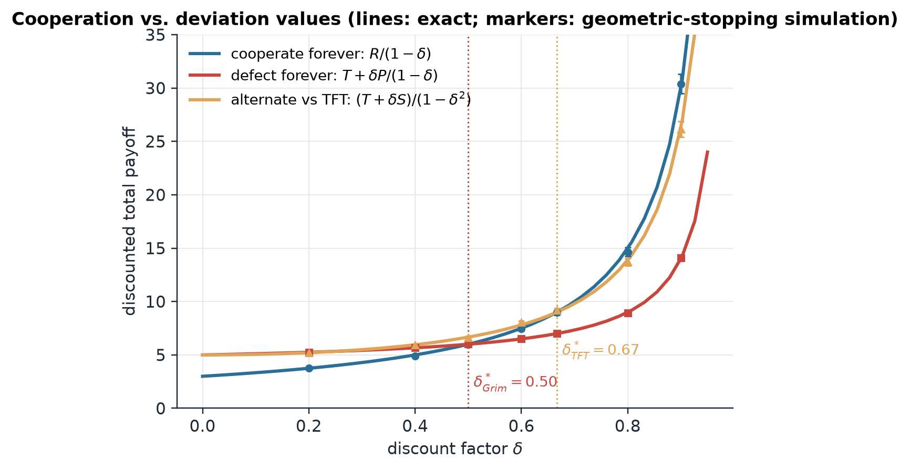
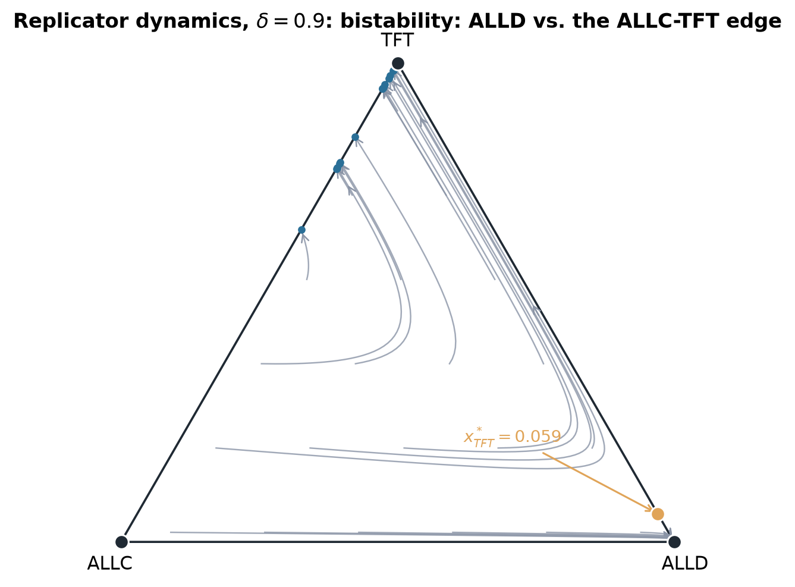
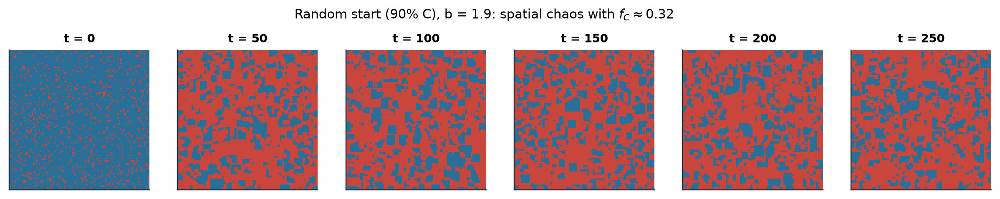
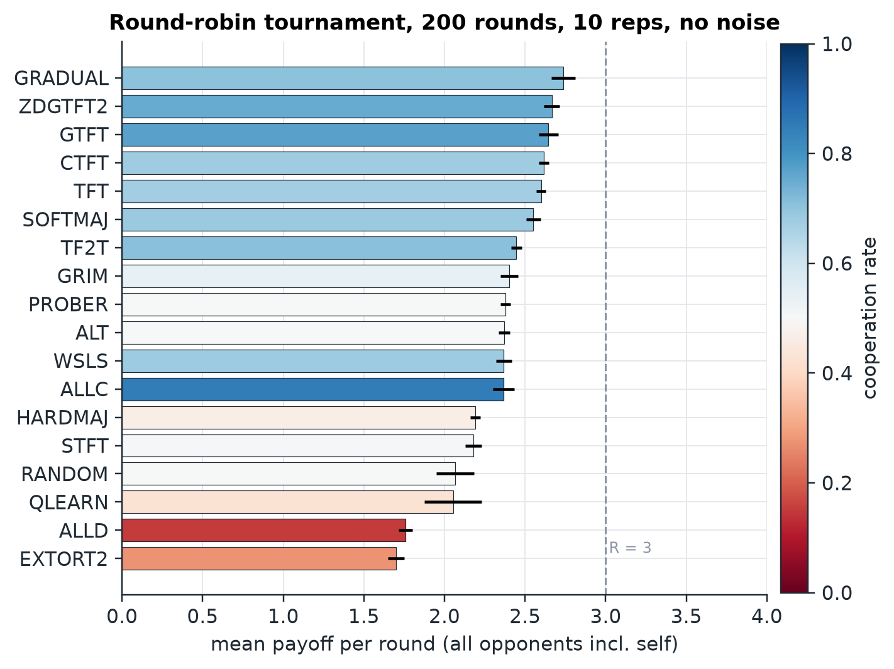
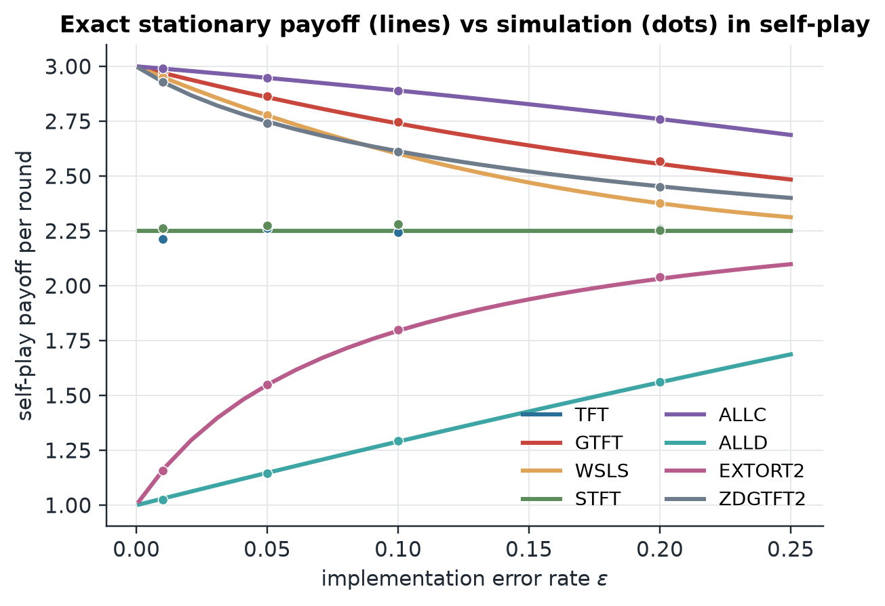
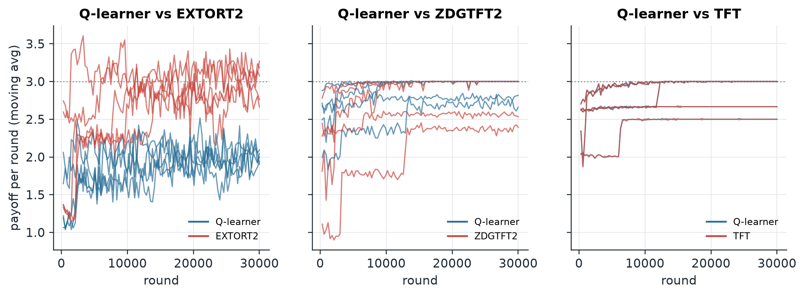

Defecting is better whatever the other player does, so both defect and both end up worse off.
they cooperate
they defect
you cooperate
3, 3better for both
0, 5
you defect
5, 0
1, 1the only equilibrium
Read down either column: 5 > 3 and 1 > 0. Defect strictly dominates.
So (defect, defect) is the unique Nash equilibrium, and (cooperate, cooperate) beats it for both players.
The rest of the talk: what rescues cooperation, and what breaks it again.
Philip Bergman, game theory final project.
Payoffs throughout: (T, R, P, S) = (5, 3, 1, 0)
Repeat the game forever and cooperation becomes an equilibrium, once players are patient enough.
A known last round unravels everything: defect in round N, so in N−1, … back to round 1.
With no last round, Grim Trigger holds iff δ ≥ T − RT − P = 12
Tit-for-Tat needs δ ≥ 23, and is subgame perfect only if T − R = P − S. Here 2 ≠ 1: never.

Under selection, Tit-for-Tat cannot invade defectors alone. It needs a critical mass.
Replicator dynamics on ALLC, ALLD and TFT at δ = 0.9.
On the ALLD–TFT edge there is an unstable rest point at x* = 117 = 0.0588. Below it TFT dies out, above it TFT takes over.
In a finite population chance can carry it across: one TFT mutant fixes with probability above 1/N.

Every derived number was then measured by simulation.
| claim | derived | measured |
|---|---|---|
| Grim Trigger threshold | δ* = 1/2 | payoffs cross at 0.50 |
| TFT critical mass | x* = 1/17 | trajectories split at 0.0588 |
| TFT extinction rate below x* | −0.100 | −0.098 |
| Fixation of one TFT mutant | exact formula | within 2 s.e., N = 4 … 32 |
| Nowak–May lattice, cooperator share | 0.318 published | 0.314 |
| Strategy code against the axelrod library | — | 91 / 91 pairings identical |

In an 18-strategy tournament the top eight are all nice, and Tit-for-Tat is fifth, not first.
Gradual 2.737
ZDGTFT-2 2.665
GTFT 2.645
Contrite TFT 2.615
TFT 2.599
Mean payoff per round, 200 rounds, round robin. Nice means never the first to defect.

Any error rate at all, however small, drops Tit-for-Tat against itself from 3 to 2.25.
Each move flips with probability ε. Two TFT players are a 4-state Markov chain whose transition matrix is doubly stochastic.
So every outcome is equally likely in the long run: T + R + P + S4 = 2.25 for every ε > 0.
Forgiving strategies lose only linearly: WSLS 3 − 5ε, GTFT 3 − 3ε.

An extortioner beats a learning opponent one on one, and still loses the tournament.
Extort-2 (Press & Dyson 2012) forces sX − 1 = 2 (sY − 1) on any opponent. A Q‑learner ends at 1.97 while the extortioner takes 2.98.
But against the whole field it scores 1.700, last of 18, and it goes extinct in evolving populations. Extortion needs a victim; it cannot live off itself.

Cooperation survives through patience, clustering and forgiveness, and each one has a breaking point.
- Live: open the app and switch the lattice to asynchronous updating. Cooperation falls from 0.314 to 0.006.
- Report, code and every number: github.com/philipbergman6-glitch/pdlab
- One command reproduces all results; about 350 tests guard them.